Core Objectives
- Contrast Herbert Hoover's philosophy of "Rugged Individualism" with Franklin D. Roosevelt's "New Deal" philosophy regarding the role of the federal government in a crisis.
- Analyze the significance of the Election of 1932 as a critical realignment of voter expectations and government responsibility.
- Evaluate the effectiveness of the "First Hundred Days" in restoring public confidence, particularly through the Bank Holiday and the Emergency Banking Relief Act.
Key Terms
Franklin D. Roosevelt | Herbert Hoover | Election of 1932 | The Hundred Days | Bank Holiday | Fireside Chats | Brain Trust | Emergency Banking Relief Act | 20th Amendment | 21st Amendment | Eleanor Roosevelt | Volunteerism
I. The Philosophy of the Old Guard
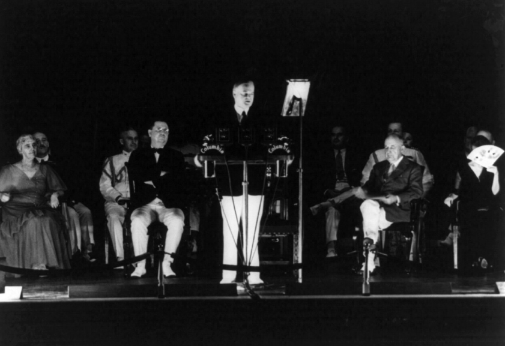
As the Great Depression reached its most agonizing depths between 1930 and 1932, the American presidency faced a trial unlike any since the Civil War. At the center of this storm stood Herbert Hoover, a man whose life story embodied the very "American Dream" that now seemed to be vanishing. Hoover was a world-renowned mining engineer and a self-made millionaire who had earned a reputation as the "Great Humanitarian" for his tireless work feeding starving Europeans after World War I. He was a master of efficiency and a firm believer in the power of the American system. However, the very qualities that had made him successful in the past—his reliance on logic, his belief in self-reliance, and his distrust of government bureaucracy—became his greatest liabilities during the economic collapse. Hoover was not indifferent to the suffering of the people, but he was ideologically paralyzed by a political philosophy that prohibited him from taking the very actions the public demanded.
Hoover’s governing philosophy was rooted in a concept he called rugged individualism. This was the conviction that the United States was unique because it allowed individuals to succeed through their own initiative, hard work, and character without the interference or the "handouts" of a paternalistic government. To Hoover, the strength of the American republic lay in the "spirit of self-help." He argued that if the federal government began providing direct relief—what was then called "the dole"—it would destroy the moral fiber of the citizenry, undermine local charities, and create a permanent class of people dependent on the state. He saw the Depression as a temporary, albeit severe, "fluctuation" in the business cycle that had to be weathered through patience and individual grit. He believed that the government’s proper role was to act as an "umpire," ensuring fair play and fostering cooperation, but never becoming a direct participant in the economic lives of the people.
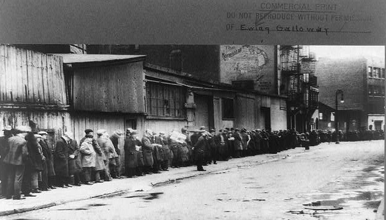
To address the crisis, Hoover initially relied on a policy of volunteerism. He frequently invited business, labor, and agricultural leaders to the White House, urging them to work together voluntarily to stabilize the economy. He asked business owners to pledge that they would not cut wages or production, and he requested that labor leaders refrain from striking or demanding higher pay. Hoover believed that if the private sector maintained its confidence, the economy naturally recover. However, this strategy relied on a degree of cooperation that was impossible to sustain in the face of vanishing profits. As warehouses overflowed and banks collapsed, business owners broke their pledges and slashed wages to stay afloat. The private charities and local governments that Hoover designated as the primary providers of relief were quickly overwhelmed by the millions of people in need. By 1932, the "rugged individual" had become a man waiting in a mile-long breadline, and the president’s insistence on limited government began to look like a stubborn refusal to see the reality of the crisis.
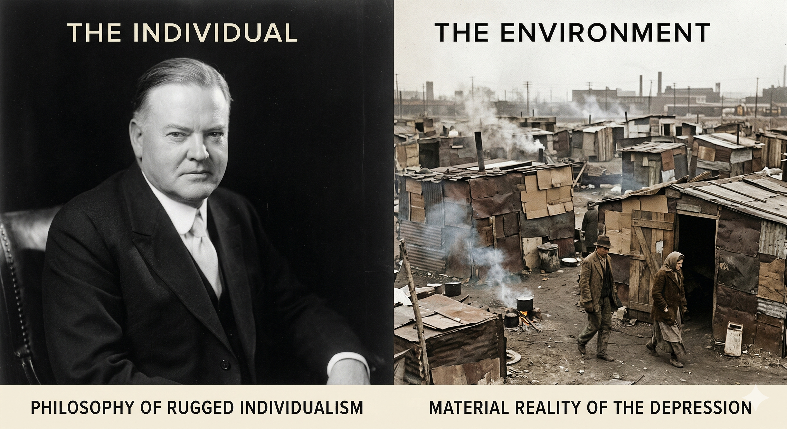
1. What was the primary reason Herbert Hoover opposed providing direct federal relief to the unemployed?
II. The Realignment: The Election of 1932
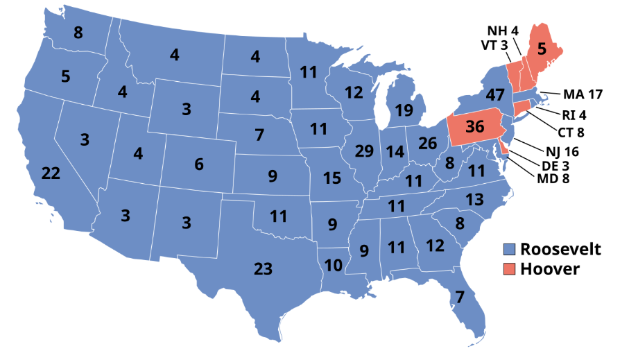
The Election of 1932 was far more than a routine change in leadership; it was a fundamental realignment of the American political identity. By the time the campaign began, the national mood had shifted from anxiety to a desperate, quiet anger. The Republican Party, feeling they had no other choice, renominated Herbert Hoover. Hoover’s campaign was somber and defensive. He traveled the country giving stiff, formal speeches that warned of the "dangers" of radical change. He insisted that his policies were beginning to work and that a victory for the Democrats would mean the destruction of the very foundations of American liberty. To a public living in shantytowns, Hoover’s warnings about "preserving the system" rang hollow; they felt the system had already failed them.
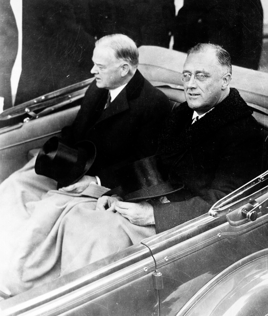
In stark contrast, the Democratic candidate, Franklin D. Roosevelt, exuded an aura of boundless energy and optimism. Roosevelt, a former governor of New York and a distant cousin of Theodore Roosevelt, was a master of political theater. He had spent years battling the effects of polio, a struggle that had left him paralyzed from the waist down but had also forged a deep sense of empathy for the "forgotten man" at the bottom of the economic pyramid. During the campaign, Roosevelt traveled thousands of miles, flashing a famous smile and promising a "new deal for the American people." While his specific plans were often vague and sometimes contradictory, his central message was clear: the government had a moral obligation to act, and he was willing to try anything to restore prosperity. He called for "bold, persistent experimentation," asserting that "it is common sense to take a method and try it: if it fails, admit it frankly and try another. But above all, try something."
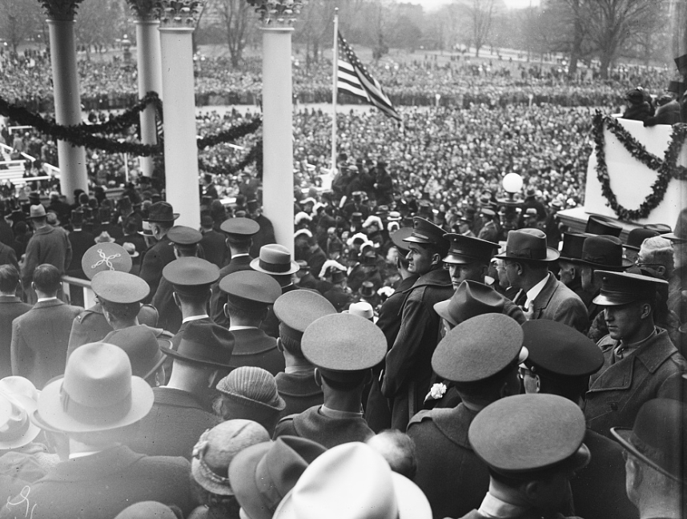
The election results were a crushing defeat for the old order. Roosevelt won a landslide victory, capturing 57 percent of the popular vote and 472 electoral votes compared to Hoover’s 59. This victory signaled a massive shift in voter loyalty. For the first time since the Civil War, the Democratic Party became the dominant force in American politics, building a "New Deal Coalition" that brought together urban workers, Southern whites, various ethnic groups, and, significantly, African Americans who had traditionally voted for the party of Lincoln. This realignment was so profound that it would define the American political landscape for the next four decades. The long, painful wait for the transition—lasting from November until March—highlighted the need for the 20th Amendment, which moved presidential inaugurations to January to shorten the "lame duck" period.
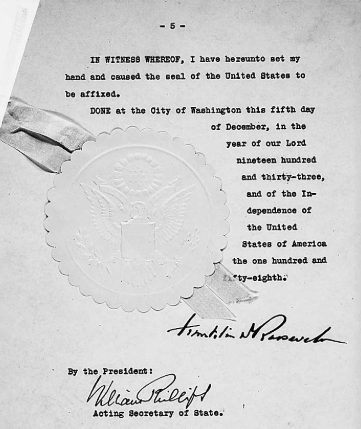
Additionally, the public's desire for a break from the past was reflected in the support for the 21st Amendment, which would soon repeal Prohibition and end the "noble experiment" of the 1920s.
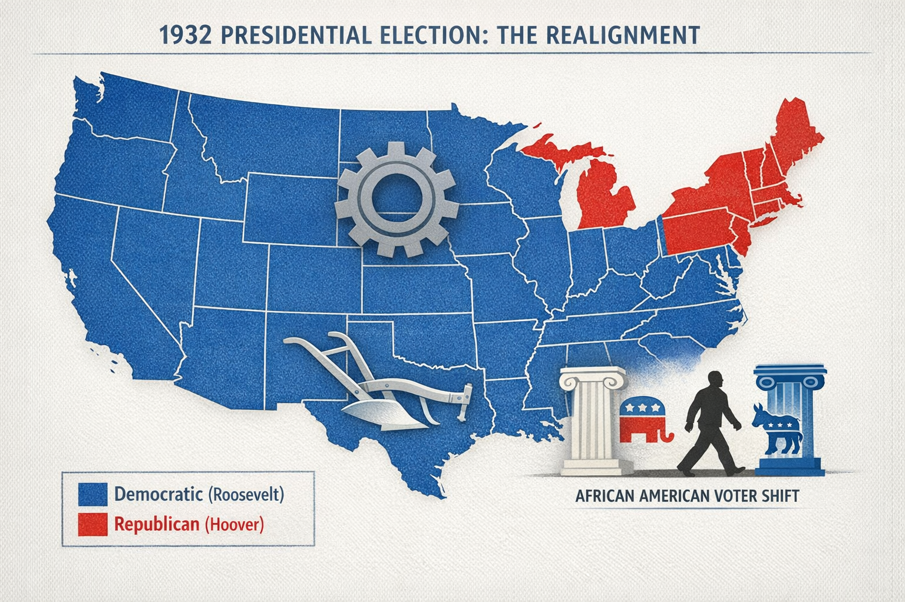
The Influence of Eleanor Roosevelt
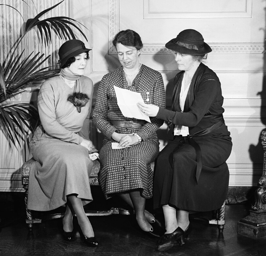
Central to the new administration’s success was the unprecedented role played by Eleanor Roosevelt. More than just a traditional First Lady, Eleanor became a powerful political force in her own right and a tireless advocate for social justice. Because FDR’s mobility was limited by his paralysis, Eleanor served as his "eyes and ears," traveling the country to witness the conditions of the American people firsthand. She descended into coal mines, visited the tenements of the urban poor, and toured the migrant camps of the West. She returned to the White House with detailed reports that often pushed the president to consider the needs of those whom the New Deal might otherwise have overlooked, particularly women and racial minorities.
Eleanor Roosevelt redefined the public's expectations of a First Lady. She held her own press conferences (open only to female reporters), wrote a daily newspaper column titled "My Day," and was a frequent speaker on the radio. Her activism was often more progressive than her husband’s, and she served as a bridge between the administration and various social reform movements. Her presence signaled that the New Deal was not just about economic statistics; it was about the human experience and the government’s responsibility to protect the dignity of its citizens. By humanizing the presidency, Eleanor helped build the deep emotional bond between the Roosevelt administration and the American public that would sustain the nation through the years of hardship.
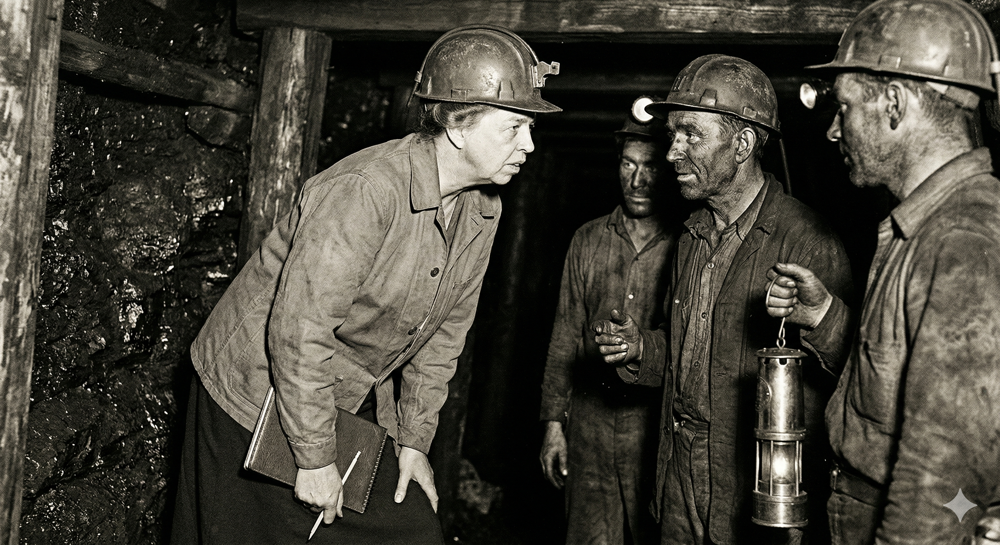
1. How did Franklin D. Roosevelt’s campaign message differ from Herbert Hoover’s in 1932?
III. Restoring Faith: The First Hundred Days
When Franklin Roosevelt took the oath of office on March 4, 1933, the United States was at its absolute breaking point. The banking system had almost completely ceased to function, with 38 states having already closed their banks to prevent total collapse. In his inaugural address, Roosevelt struck a tone of wartime urgency, telling the nation that "the only thing we have to fear is fear itself." He immediately launched into an unprecedented period of legislative activity known as the Hundred Days. During this brief window, Roosevelt and his advisors pushed fifteen major pieces of legislation through a willing Congress, creating the "alphabet soup" of agencies that would come to define the New Deal.
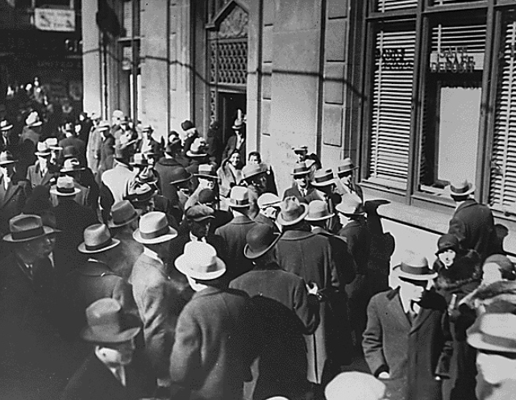
The most immediate crisis was the total collapse of public trust in the financial system. To address this, Roosevelt took the drastic step of declaring a national Bank Holiday just one day after taking office. This move ordered every bank in the country to close its doors, halting the panic-driven "bank runs" that were draining the nation’s cash reserves. While the banks were closed, Roosevelt pushed the Emergency Banking Relief Act through Congress in a single day. This law authorized the Treasury Department to inspect the nation's banks. Those that were sound were allowed to reopen; those that were insolvent remained closed; and those that needed help could receive government loans. This was a masterstroke of psychological and economic management. It replaced the chaos of the crash with a sense of orderly, federal supervision.
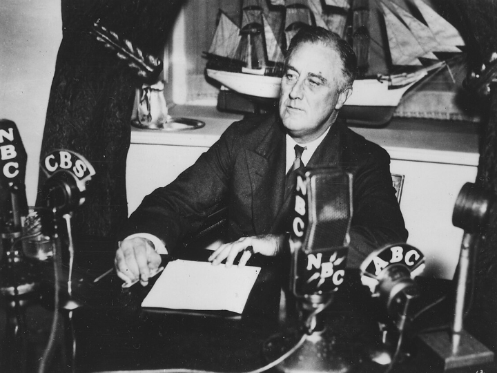
To ensure the public understood and supported these moves, Roosevelt turned to the relatively new technology of the radio. He began a series of informal, direct talks known as Fireside Chats. In these broadcasts, Roosevelt spoke in simple, clear language, sitting in the White House as if he were a guest in the listener's living room. In his first chat, he explained the mechanics of the banking system and why the Bank Holiday was necessary. He told the people that "it is safer to keep your money in a reopened bank than under the mattress." The effect was transformative. When the banks reopened, people did not rush to withdraw their money; instead, they stood in line to deposit it. By communicating directly with the people and explaining his actions as a common-sense partnership, Roosevelt began the long process of restoring the nation's shattered confidence.
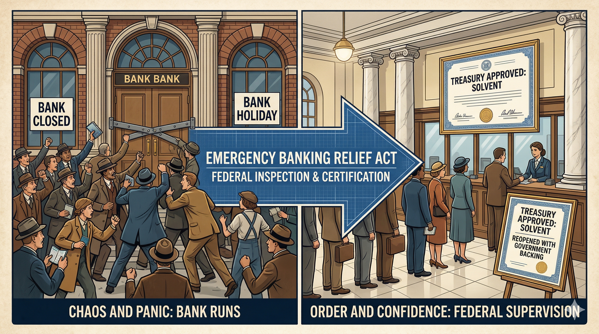
The Brain Trust and the Spirit of Experimentation
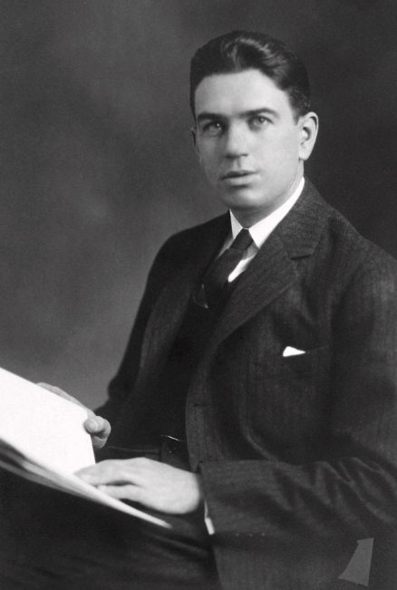
Roosevelt did not act in isolation. He surrounded himself with a group of close advisors known as the Brain Trust. This was a circle of professors, lawyers, and journalists—many from Columbia University—who were experts in economics and social planning. These advisors, including figures like Rexford Tugwell and Raymond Moley, encouraged Roosevelt to move away from the traditional "laissez-faire" economics of the past and toward a more managed, planned economy. They believed that the Great Depression was proof that the modern industrial world was too complex to be left to the whims of the market alone. Under their influence, the First Hundred Days became a laboratory for social and economic reform.
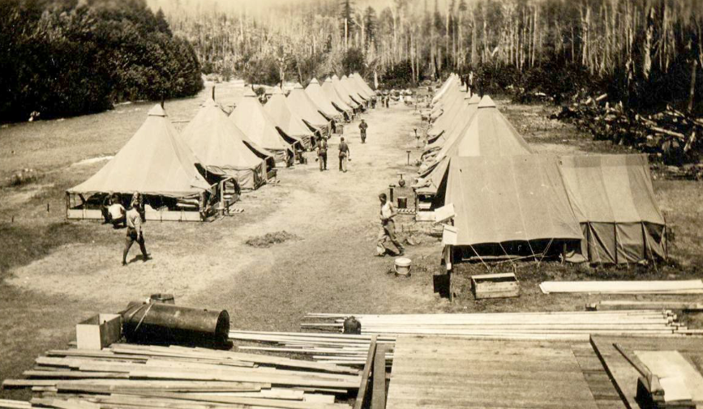
The Brain Trust advocated for a "three-pronged" approach to the crisis: Relief for the hungry and homeless, Recovery for the struggling economy, and Reform of the financial system to prevent future collapses. This marked the birth of the "alphabet soup" agencies. The Civilian Conservation Corps (CCC) put young men to work on environmental projects; the Agricultural Adjustment Act (AAA) sought to raise crop prices by paying farmers to leave land unplanted; and the National Recovery Administration (NRA) attempted to set codes for fair competition in industry. While not every program was successful, the sheer volume of activity convinced the American people that their government was finally fighting for them. This "bold experimentation" signaled the end of the minimalist state and the beginning of a new era where the federal government was an active participant in the daily lives of its citizens.
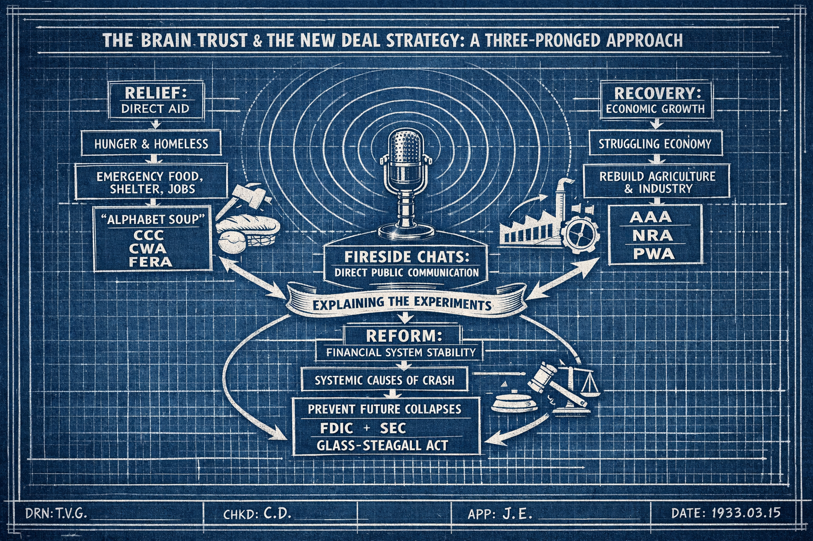
A New Social Contract
The shift from Hoover’s administration to Roosevelt’s represented a fundamental rewrite of the American social contract. For over a century, the prevailing American belief had been that the government should stay out of the way of the economy and that the "general welfare" mentioned in the Constitution was best served through private enterprise and local charity. The Great Depression had shattered this consensus. It proved that in a modern, interconnected industrial society, the failures of the market could be so vast and so systemic that no amount of "rugged individualism" or local volunteering could stop the suffering. Roosevelt’s New Deal was the political expression of this new reality.
The New Deal established the principle that the federal government had a direct responsibility for the economic security of its people. No longer was the government merely a passive observer or a neutral umpire; it was now the "protector of last resort." This meant that when the private sector failed to provide jobs, the government would create them. When the banking system failed to protect savings, the government would insure them. When the market failed to provide for the elderly or the disabled, the government would create a safety net. This expansion of federal power was revolutionary, and it fundamentally altered the relationship between the citizen and the state. The "safety net" that began with the emergency measures of the Hundred Days would eventually evolve into the modern welfare state.
However, this transition was not without deep controversy. Many critics, including many in the Republican Party and the business community, viewed the New Deal as a dangerous step toward socialism or even dictatorship. They argued that the "alphabet soup" agencies were unconstitutional and that the massive increase in government spending and debt would bankrupt the nation. They feared that by taking on the role of provider, the government was destroying the very independence that Hoover had so highly valued. This debate—between the need for government-provided security and the desire for individual liberty—became the central conflict of 20th-century American politics. As the 1930s progressed, Roosevelt would have to defend his programs not only in the voting booth but also in the Supreme Court, as the nation struggled to decide how much power the federal government should truly have.
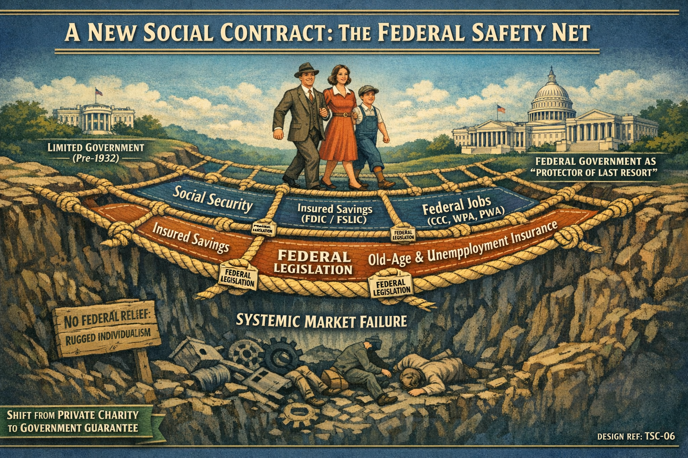
1. What was the primary purpose of the national "Bank Holiday" declared by Roosevelt?
IV. Evidence & Perspective: Competing Visions
The Role of Government: Hoover’s "Rugged Individualism" vs. FDR’s "First Inaugural."
The Vision of Herbert Hoover
In October 1928, just before his election, Herbert Hoover delivered a landmark speech in New York City that defined his political creed. He argued that the American system was based on "ordered liberty" and that the primary danger to that liberty was the expansion of government bureaucracy. He warned that if the federal government took over the responsibilities of local communities or individuals, it would destroy the "spirit of service" and lead to a "chilling of enterprise." For Hoover, the Great Depression was a temporary "storm" that had to be weathered through character and voluntary cooperation. He believed that the government’s role was to be an "umpire," ensuring fair play but never becoming a participant in the game itself. He famously asserted that the "American system" was a "product of 150 years of the sturdiest individualism."
The Vision of Franklin D. Roosevelt
On March 4, 1933, standing on the steps of the Capitol, Franklin Roosevelt presented a radically different vision of the American system. He argued that the economic crisis was not a natural disaster, but the result of the "unscrupulous money changers" and a lack of vision among previous leaders. He asserted that the nation’s "primary task is to put people to work" and that this could be accomplished through direct government action "as a war emergency." Most significantly, he stated that the government must apply "social values more noble than mere monetary profit." For FDR, the government was not just an umpire; it was a protector and a provider, with a moral obligation to intervene when the private sector failed to provide the basic necessities of life.
Historical Significance
These two visions represent the great ideological divide of the twentieth century. Hoover’s warning about the "chilling" effect of government bureaucracy continues to resonate in modern conservative thought, emphasizing the importance of local control and individual initiative. Roosevelt’s insistence on the government’s role as a provider of security became the foundation of modern liberalism and the architect of the social safety net. The transition from one to the other in 1932 was not just a change in leadership, but a "peaceful revolution" that redefined the American social contract, setting the stage for the massive expansion of the federal government that characterizes modern American life.
Why did Franklin Roosevelt choose the term "New Deal" to describe his program? How did this specific choice of imagery, combined with his informal "Fireside Chats," affect the emotional connection between the president and the public compared to Hoover’s formal, academic speeches?
Contrast Herbert Hoover’s fear that government aid would "sap the spirit" of Americans with Roosevelt’s claim that the government must act with the same power it uses in a "war emergency." How do these differing perspectives explain the intense disagreement over the legality and necessity of the First Hundred Days?
Why was the "Bank Holiday" a more effective strategy for restoring public confidence than Hoover’s Reconstruction Finance Corporation (RFC)? Consider the role of psychological perception and direct communication versus institutional financial support in a moment of national panic.
V. Vocabulary Review
At the onset of the Great Depression, President (1) attempted to manage the crisis through a policy of (2), believing that private cooperation would stabilize the economy. However, as conditions worsened, the public demanded more direct intervention. This frustration culminated in the (3), a massive political realignment that brought (4) into power. Because the nation could not afford to wait months for a transition of power, the (5) was eventually ratified to shorten the "lame duck" period.
Upon taking office, the new administration launched into a period of frantic legislative activity known as (6). To address the collapsing financial system, the president declared a national (7) and pushed the (8) through Congress to inspect and reopen sound banks. The president explained these complex actions directly to the American people through a series of informal radio broadcasts called (9). He relied heavily on his (10), a group of academic advisors who helped design new programs. Additionally, (11) played a vital role by traveling the country to report on the needs of the "forgotten man." Finally, as a symbol of the nation moving away from the restrictions of the past, the (12) was ratified to repeal Prohibition.